MAXimal
добавлено: 10 Jun 2008 19:28
редактировано: 23 Aug 2011 11:23
Содержание [скрыть]
Поиск мостов
Пусть дан неориентированный граф. Мостом называется такое ребро, удаление которого делает граф несвязным (или, точнее, увеличивает число компонент связности). Требуется найти все мосты в заданном графе.
Неформально эта задача ставится следующим образом: требуется найти на заданной карте дорог все "важные" дороги, т.е. такие дороги, что удаление любой из них приведёт к исчезновению пути между какой-то парой городов.
Ниже мы опишем алгоритм, основанный на поиске в глубину, и работающий за время  , где
, где  — количество вершин,
— количество вершин,  — рёбер в графе.
— рёбер в графе.
Заметим, что на сайте также описан онлайновый алгоритм поиска мостов — в отличие от описанного здесь алгоритма, онлайновый алгоритм умеет поддерживать все мосты графа в изменяющемся графе (имеются в виду добавления новых рёбер).
Алгоритм
Запустим обход в глубину из произвольной вершины графа; обозначим её через 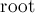. Заметим следующий факт (который несложно доказать):
- Пусть мы находимся в обходе в глубину, просматривая сейчас все рёбра из вершины
 . Тогда, если текущее ребро
. Тогда, если текущее ребро  таково, что из вершины
таково, что из вершины  и из любого её потомка в дереве обхода в глубину нет обратного ребра в вершину или какого-либо её предка, то это ребро является мостом. В противном случае оно мостом не является. (В самом деле, мы этим условием проверяем, нет ли другого пути из в , кроме как спуск по ребру дерева обхода в глубину.)
и из любого её потомка в дереве обхода в глубину нет обратного ребра в вершину или какого-либо её предка, то это ребро является мостом. В противном случае оно мостом не является. (В самом деле, мы этим условием проверяем, нет ли другого пути из в , кроме как спуск по ребру дерева обхода в глубину.)
Теперь осталось научиться проверять этот факт для каждой вершины эффективно. Для этого воспользуемся "временами входа в вершину", вычисляемыми алгоритмом поиска в глубину.
Итак, пусть 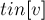 — это время захода поиска в глубину в вершину . Теперь введём массив 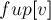, который и позволит нам отвечать на вышеописанные запросы. Время равно минимуму из времени захода в саму вершину , времён захода в каждую вершину  , являющуюся концом некоторого обратного ребра 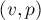, а также из всех значений 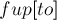 для каждой вершины , являющейся непосредственным сыном в дереве поиска:
, являющуюся концом некоторого обратного ребра 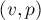, а также из всех значений 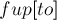 для каждой вершины , являющейся непосредственным сыном в дереве поиска:
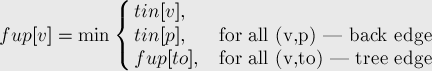
(здесь "back edge" — обратное ребро, "tree edge" — ребро дерева)
Тогда, из вершины или её потомка есть обратное ребро в её предка тогда и только тогда, когда найдётся такой сын , что 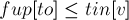. (Если 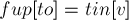, то это означает, что найдётся обратное ребро, приходящее точно в ; если же 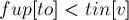, то это означает наличие обратного ребра в какого-либо предка вершины .)
Таким образом, если для текущего ребра (принадлежащего дереву поиска) выполняется 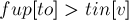 tin[v]">, то это ребро является мостом; в противном случае оно мостом не является.
Реализация
Если говорить о самой реализации, то здесь нам нужно уметь различать три случая: когда мы идём по ребру дерева поиска в глубину, когда идём по обратному ребру, и когда пытаемся пойти по ребру дерева в обратную сторону. Это, соответственно, случаи:
- 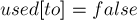 — критерий ребра дерева поиска;
![used[to]=true\ \&\&\ to \ne parent](../tex2png/cache/0e2788b7fd3a152e7a01b7f51ce2f226.png) — критерий обратного ребра;
— критерий обратного ребра;- 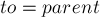 — критерий прохода по ребру дерева поиска в обратную сторону.
Таким образом, для реализации этих критериев нам надо передавать в функцию поиска в глубину вершину-предка текущей вершины.
const int MAXN = ...; vector<int> g[MAXN]; bool used[MAXN]; int timer, tin[MAXN], fup[MAXN]; void dfs (int v, int p = -1) { used[v] = true; tin[v] = fup[v] = timer++; for (size_t i=0; i<g[v].size(); ++i) { int to = g[v][i]; if (to == p) continue; if (used[to]) fup[v] = min (fup[v], tin[to]); else { dfs (to, v); fup[v] = min (fup[v], fup[to]); if (fup[to] > tin[v]) IS_BRIDGE(v,to); } } } void find_bridges() { timer = 0; for (int i=0; i<n; ++i) used[i] = false; for (int i=0; i<n; ++i) if (!used[i]) dfs (i); }
Здесь основная функция для вызова — это 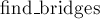 — она производит необходимую инициализацию и запуск обхода в глубину для каждой компоненты связности графа.
При этом 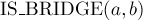 — это некая функция, которая будет реагировать на то, что ребро  является мостом, например, выводить это ребро на экран.
является мостом, например, выводить это ребро на экран.
Константе 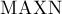 в самом начале кода следует задать значение, равное максимально возможному числу вершин во входном графе.
Стоит заметить, что эта реализация некорректно работает при наличии в графе кратных рёбер: она фактически не обращает внимания, кратное ли ребро или оно единственно. Разумеется, кратные рёбра не должны входить в ответ, поэтому при вызове 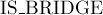 можно проверять дополнительно, не кратное ли ребро мы хотим добавить в ответ. Другой способ — более аккуратная работа с предками, т.е. передавать в 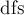 не вершину-предка, а номер ребра, по которому мы вошли в вершину (для этого надо будет дополнительно хранить номера всех рёбер).
Задачи в online judges
Список задач, в которых требуется искать мосты: